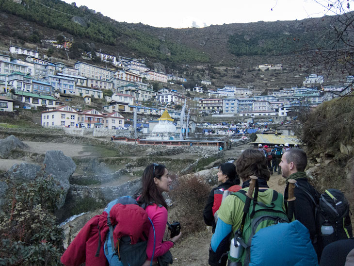

Saturday 19th November 
Namche Bazaar (3440m) is the last large town before you hit the mountains. The main shopping touristy area is made up of maybe two or three streets with shops and lodges selling everything a trekker might need. Along with the usual food and souvenir stalls, these were also quite a few mountain hardware and clothing stores.
I asked Hari how far it was to walk from Lukla to Baecamp. I think he said it was about 120km.
My room was right underneath the lodge, and it was a tad damp. It did have an en suite bathroom with a shower though. I never did understand how the hot water worked - I think there was a limited supply which is piped to everyone, and it was first come, first served, then you were meant to pay for the usage.
For some reason, I thought the blankets were for sleeping on and slept a bit colder than I needed to in just my sleeping bag. I also managed to develop an awful headache towards the end of today, and lost some night’s sleep tossing and turning in bed - it felt a lot like a hangover. Was probably still acclimatising.
Leaving my room in the morning, I was greeted with the most spectacular view of the mountains. What an amazing thing to see on your doorstep. Beautiful.